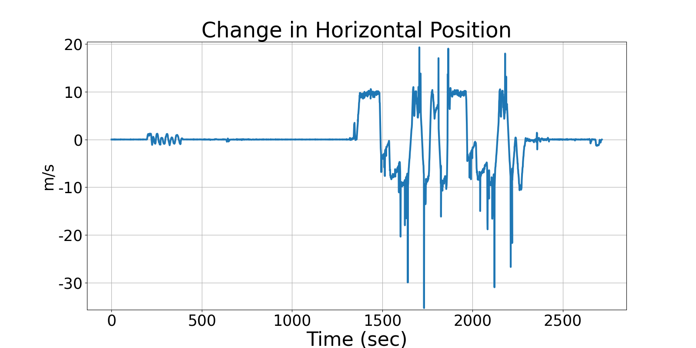
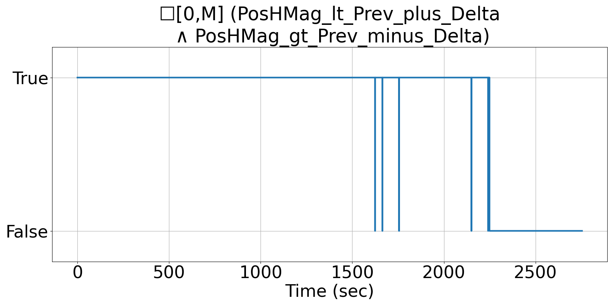

Integrating Runtime Verification into an
Automated UAS Traffic Management System
Matthew Cauwels, Abigail Hammer, Benjamin Hertz, Phillip H. Jones, Kristin Y. Rozier
This webpage contains supplementary specifications for "Integrating Runtime Verification into an
Automated UAS Traffic Management System" by M. Cauwels, A. Hammer, B. Hertz, P. H. Jones, and K. Y. Rozier
RC_UAS_2
Specification Description
The horizontal position (PosN, PosE) magnitude will not change by more than POSH_DELTA_MAX each sample instance at any time
Signals Required
PosN, PosE
Boolean Conversion of Signals to Atomic Inputs
PosHMag = √(PosN² + PosE²)
PosHMag_lt_Prev_plus_Delta: PosHMag < PREV_POS_MAG + POSH_DELTA_MAX
PosHMag_gr_Prev_minus_Delta: PosHMag > PREV_POS_MAG - POSH_DELTA_MAXMLTL Specification
☐[0,M] (PosHMag_lt_Prev_plus_Delta ∧ PosHMag_gt_Prev_minus_Delta)
Fault Explanation
Horizontal Position is changing too fast.
Additional Notes
POSH_DELTA_MAX based on max horizontal speed (56 km/hr from data sheet) Corresponds with operating bounds spec for horizontal velocity
Figures

